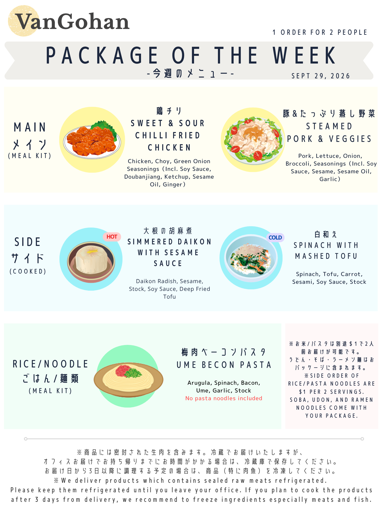

VanGohan Recipe: Week of 2026-10-05
Fried Chicken with Graded Daikon and Lime Sauce
Things you need to prepare
- Cooking oil
- Salt & pepper
Instructions
- Marinate chicken with Seasoning① for 10 mins, then salt & pepper and coat chicken with potato starch①
- Pre-heat about 1-2cm of cooking oil in a pan or a pot at 180℃/350F (dip the handle of a wooden spoon or a chopstick into the oil, and the oil starts steadily bubbling, then the oil is hot enough)
- Fry about 3-5 mins each side of chicken. Please make sure the chicken is well cooked
- Bring Seasoning④ to a boil in a pan or microwave and toss it with freshly fried chicken in a bowl then arrange on a plate
- Pour grated Daikon on top and add vegetables on the side
Pork With Mustard Sauce
Things you need to prepare
Instructions
- Boil Pork in a pot and drain water.
- Add Seasoning ② and carrots & ginger② in a bowl with boiled pork and mix them well
- Arrange it on a plate with Cabbage and Japanese basil
Starchy Rice Bowl Sauce
Things you need to prepare
Instructions
- Heat starchy sauce in a pan or microwave it
- Serve rice in a bowl and por the sauce
- Adjust taste with soy sauce
